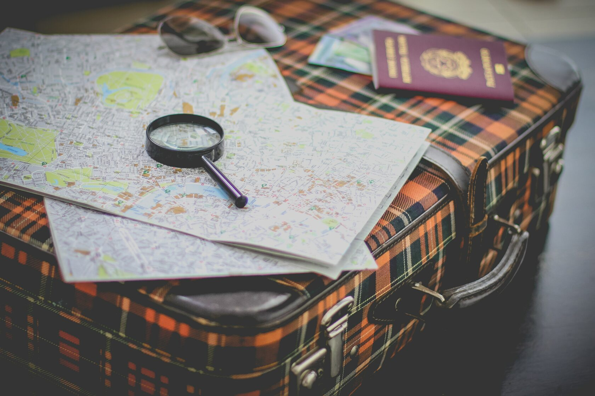

←
Подготовка документов для отъезда
- Проверьте сроки действия загранпаспортов, желательно, чтобы они были максимальны. В будущем обменять паспорта на новые можно в консульстве в Белграде. Это может занять больше времени, чем в России.
- Если вы уезжаете, оставив имущество, сделайте генеральную доверенность на родственника или надежного человека, опять же доверенность и другие нотариальные действия можно совершить в консульстве.
- Постарайтесь обменять банковские карты, чтобы они имели максимальный срок действия. Учтите, карты МИР в Сербии НЕ РАБОТАЮТ.
- Установите на смартфон банковское приложение.
Если все вышеперечисленные моменты у вас давно решены и ехать нужно срочно, возьмите с собой документы:
- если у вас два загранпаспорта, обязательно берите оба;
- внутренний российский паспорт;
- свидетельства о рождении каждого члена семьи, который уезжает;
- свидетельства о браке;
- если вдовцы - свидетельства о смерти супруга;
- все дипломы, свидетельства, подтверждающие образование.
Для детей обязательно медицинскую карту, карту прививок, все возможные документы из школы или института.
Для пенсионеров обязательно получите выписку из Пенсионного фонда о размерах начисленной пенсии.
ВНИМАНИЕ! НЕ НУЖНО ДЕЛАТЬ НИКАКИХ ПЕРЕВОДОВ, НЕ НУЖНО ЗАВЕРЯТЬ НИКАКИХ АПОСТИЛЕЙ! ВСЕ ДОКУМЕНТЫ ДЛЯ ПОДАЧИ НА ВНЖ, НОСТИФИКАЦИИ ДИПЛОМОВ , ПЕРЕВОДЫ ДОКУМЕНТОВ ДЛЯ ШКОЛЫ, МОЖНО ПЕРЕВЕСТИ В СЕРБИИ У СУДЕБНОГО ПЕРЕВОДЧИКА. В Сербии пока НЕ ТРЕБУЕТСЯ СПРАВКА О НАЛИЧИИ/ОТСУТСТВИИ СУДИМОСТИ.
НЕТ НЕОБХОДИМОСТИ оформлять в России международные права. В Сербии можно управлять авто по российским правам. В дальнейшем их легко можно обменять на Сербские.